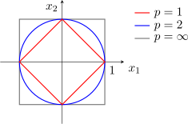

1.1 Some Basic Inequalities
The \(l_p\) spaces are defined by a convergence condition on a series, and almost everything about them rests on three inequalities proved here. Young’s inequality is elementary and is used to prove Hölder’s; Hölder’s is used in turn to prove Minkowski’s; and Minkowski’s inequality is exactly the statement that the \(l_p\) norm satisfies the triangle inequality, which is what makes \(l_p\) a normed space at all.
Theorem 1.1 (Young’s inequality). Let \(p,q\) be two real numbers, such that \(p,q>1\) and \(\frac {1}{p}+\frac {1}{q}=1\), then for any \(\alpha , \beta \geq 0\), \begin {equation} \alpha \beta \leq \frac {\alpha ^p}{p}+\frac {\beta ^q}{q}\tag {1} \end {equation}
Proof. For \(\alpha \) or \(\beta =0\), \((1)\) is trivially true.
So, let \(\alpha , \beta >0\), consider the curve \(\hspace {0.2cm}\displaystyle {x=t^{p-1}}\hspace {0.2cm}\), we can write this as \(\hspace {0.2cm}\displaystyle {t=x^{q-1}}\hspace {0.2cm}\)
Now \(\hspace {0.3cm}\displaystyle {\int ^{\alpha }_0 t^{p-1}\,dt=\frac {t^p}{p}\Bigg |^{\alpha }_0=\frac {\alpha ^p}{p}}\hspace {0.3cm}\) and \(\hspace {0.3cm}\displaystyle {\int ^{\beta }_0 x^{q-1}\,dx=\frac {\beta ^q}{q}}\)
Now, consider
\[\alpha \beta \leq \frac {\alpha ^p}{p}+\frac {\beta ^q}{q}\] □
Theorem 1.2 (Hölder’s inequality).
If \(p,q>1\) and \(\dfrac {1}{p}+\dfrac {1}{q}=1\), and let \(\{x_i\}\) and \(\{y_i\}\) be infinite sequences of complex numbers satisfying \(\sum \limits ^{\infty }_{i=1}|x_i|^p<\infty \) and \(\sum \limits ^{\infty }_{i=1}|y_i|^q<\infty \), then \begin {equation} \sum ^{\infty }_{i=1}|x_iy_i|\leq \Bigg [\sum ^{\infty }_{i=1}|x_i|^p\Bigg ]^{\frac {1}{p}}\Bigg [\sum ^{\infty }_{i=1}|y_i|^q\Bigg ]^{\frac {1}{q}}\tag {2} \end {equation}
Proof.
Set \(\hspace {0.3cm} \displaystyle {x'_i=\frac {x_i}{\Bigg [\sum \limits ^{\infty }_{i=1}|x_i|^p\Bigg ]^{\frac {1}{p}}}}\hspace {0.3cm}\) and \(\hspace {0.3cm} \displaystyle {y'_i=\frac {y_i}{\Bigg [\sum \limits ^{\infty }_{i=1}|y_i|^q\Bigg ]^{\frac {1}{q}}}}\)
Now \(\hspace {0.5cm}\displaystyle {|x'_i|=\frac {|x_i|}{\Bigg [\sum \limits ^{\infty }_{i=1}|x_i|^p\Bigg ]^{\frac {1}{p}}}\hspace {1cm},\hspace {1cm} |y'_i|=\frac {|y_i|}{\Bigg [\sum \limits ^{\infty }_{i=1}|y_i|^q\Bigg ]^{\frac {1}{q}}}}\)
\[\implies |x'_i|^p=\frac {|x_i|^p}{\sum \limits ^{\infty }_{i=1}|x_i|^p}\hspace {1cm},\hspace {1cm} |y'_i|^q =\frac {|y_i|^q}{\sum \limits ^{\infty }_{i=1}|y_i|^q}\]
\[\implies \sum ^{\infty }_{i=1}|x'_i|^p=\frac {\sum \limits ^{\infty }_{i=1}|x_i|^p}{\sum \limits ^{\infty }_{i=1}|x_i|^p}=1\hspace {1cm},\hspace {1cm}\sum ^{\infty }_{i=1}|y'_i|^q=\frac {\sum \limits ^{\infty }_{i=1}|y_i|^q}{\sum \limits ^{\infty }_{i=1}|y_i|^q}=1\]
Now, using the inequality \((1)\) in \((2)\), we have for any \(i\)
\[|x'_i||y'_i|=|x'_iy'_i|\leq \frac {|x'_i|^p}{p}+\frac {|y'_i|^q}{q}\]
Therefore, \begin {align*} \sum _{i=1}^{\infty }|x'_iy'_i| &\leq \frac {\sum \limits ^{\infty }_{i=1}|x'_i|^p}{p}+\frac {\sum \limits ^{\infty }_{i=1}|y'_i|^q}{q} =\frac {1}{p}+\frac {1}{q} =1 \end {align*}
\[\implies \sum ^{\infty }_{i=1}|x'_iy'_i|\leq 1\implies \sum ^{\infty }_{i=1}|x'_i||y'_i|\leq 1\]
\[\implies \sum _{i=1}^{\infty }\Bigg \{\frac {|x_i|}{\Big [\sum \limits ^{\infty }_{i=1}|x_i|^p\Big ]^{\frac {1}{p}}}\Bigg \} \Bigg \{\frac {|y_i|}{\Big [\sum \limits ^{\infty }_{i=1}|y_i|^q\Big ]^{\frac {1}{q}}}\Bigg \} \leq 1\]
Hence we have,
\[\sum ^{\infty }_{i=1}|x_i||y_i|=\sum ^{\infty }_{i=1}|x_iy_i|\leq \Bigg [\sum ^{\infty }_{i=1}|x_i|^p\Bigg ]^{\frac {1}{p}}\Bigg [\sum ^{\infty }_{i=1}|y_i|^q\Bigg ]^{\frac {1}{q}}.\]
□
Corollary 1.3 (The Cauchy–Schwarz inequality). Let \(p=2\) and \(q=2\) and \(x_i,y_i\) where \(i=1,2,\dots ,n\) be sets of complex numbers. Then \[\sum ^n_{i=1}|x_iy_i|\leq \Bigg [\sum ^n_{i=1}|x_i|^2\Bigg ]^{\frac {1}{2}} \Bigg [\sum ^n_{i=1}|y_i|^2\Bigg ]^{\frac {1}{2}}\] (It has the same form even for infinity sequences )
Proof. Take \(p=q=2\) in Hölder’s inequality, which is legitimate since \(\frac 12+\frac 12=1\). The exponents \(\frac 1p\) and \(\frac 1q\) both become \(\frac 12\), and the two bracketed sums become square roots, giving the stated form at once. □
Remark (Integral form of Hölder’s inequality). Let \(x=x(t)\) and \(y=y(t)\) be two complex functions defined on \([0,1]\) satisfying \(\displaystyle {\int ^1_0|x(t)|^pdt<\infty }\) and \(\displaystyle {\int ^1_0|y(t)|^qdt<\infty }\). If \(p,q>1\) and \(\dfrac {1}{p}+\dfrac {1}{q}=1\), then \[\int ^1_0|x(t)y(t)|dt\leq \Bigg [\int ^1_0|x(t)|^pdt\Bigg ]^{\frac {1}{p}}\Bigg [\int ^1_0|y(t)|^qdt\Bigg ]^{\frac {1}{q}}\]
Theorem 1.4 (Minkowski’s inequality). If \(p\geq 1\) and \((x_i)\) and \((y_i)\) are two sequences of complex numbers such that \(\sum \limits ^{\infty }_{i=1}|x_i|^p<\infty \) and \(\sum \limits ^{\infty }_{i=1}|y_i|^p<\infty \), then \[\Bigg [\sum ^{\infty }_{i=1}|x_i+y_i|^p\Bigg ]^{\frac {1}{p}}\leq \Bigg [\sum ^{\infty }_{i=1}|x_i|^p\Bigg ]^{\frac {1}{p}}+\Bigg [\sum ^{\infty }_{i=1}|y_i|^p\Bigg ]^{\frac {1}{p}}.\]
Proof. If \(p=1\), this is obvious.
Let \(p>1\), write \(\hspace {0.3cm}\displaystyle {|x_i+y_i|^p=|x_i+y_i||x_i+y_i|^{p-1}}\). Thus, \begin {align*} |x_i+y_i|^p &=|x_i+y_i||x_i+y_i|^{p-1}\\ &\leq \Big [|x_i|+|y_i|\Big ]|x_i+y_i|^{p-1}\\ &=|x_i||x_i+y_i|^{p-1}+|y_i||x_i+y_i|^{p-1} \end {align*}
Now, consider \(\hspace {0.3cm}\displaystyle {\sum ^{\infty }_{i=1}|x_i||x_i+y_i|^{p-1}}\hspace {0.3cm},\) if \(q\) is the conjugate of \(p\) i.e \(\hspace {0.3cm}\dfrac {1}{p}+\dfrac {1}{q}=1\). Then \begin {align*} \sum ^{\infty }_{i=1}|x_i||x_i+y_i|^{p-1} &\leq \Bigg [\sum ^{\infty }_{i=1}|x_i|^p\Bigg ]^{\frac {1}{p}} \Bigg [\sum ^{\infty }_{i=1}\Big (|x_i+y_i|^{p-1}\Big )^q\Bigg ]^{\frac {1}{q}}\\ &=\Bigg [\sum ^{\infty }_{i=1}|x_i|^p\Bigg ]^{\frac {1}{p}}\Bigg [\sum ^{\infty }_{i=1}|x_i+y_i|^p\Bigg ]^{\frac {1}{q}} \end {align*}
Therefore, \[\sum ^{\infty }_{i=1}|x_i||x_i+y_i|^{p-1}\leq \Bigg [\sum ^{\infty }_{i=1}|x_i|^p\Bigg ]^{\frac {1}{p}}\Bigg [\sum ^{\infty }_{i=1}|x_i+y_i|^p\Bigg ]^{\frac {1}{q}}\qquad (*)\] Similarly, \[\sum ^{\infty }_{i=1}|y_i||x_i+y_i|^{p-1}\leq \Bigg [\sum ^{\infty }_{i=1}|y_i|^p\Bigg ]^{\frac {1}{p}}\Bigg [\sum ^{\infty }_{i=1}|x_i+y_i|^p\Bigg ]^{\frac {1}{q}}\dots (**)\] Hence using \((*)\) and \((**)\), we get \[\sum ^{\infty }_{i=1}|x_i+y_i|^p\leq \Bigg [\sum ^{\infty }_{i=1}|x_i|^p\Bigg ]^{\frac {1}{p}}\Bigg [\sum ^{\infty }_{i=1}|x_i+y_i|^p\Bigg ]^{\frac {1}{q}}+\Bigg [\sum ^{\infty }_{i=1}|y_i|^p\Bigg ]^{\frac {1}{p}}\Bigg [\sum ^{\infty }_{i=1}|x_i+y_i|^p\Bigg ]^{\frac {1}{q}}\]
divide both sides by \(\hspace {0.3cm}\displaystyle {\Bigg [\sum ^{\infty }_{i=1}|x_i+y_i|^p\Bigg ]^{\frac {1}{q}}}.\hspace {0.3cm}\) We get
\[\Bigg [\sum ^{\infty }_{i=1}|x_i+y_i|^p\Bigg ]^{\frac {1}{p}}\leq \Bigg [\sum ^{\infty }_{i=1}|x_i|^p\Bigg ]^{\frac {1}{p}}+\Bigg [\sum ^{\infty }_{i=1}|y_i|^p\Bigg ]^{\frac {1}{p}}.\]
(It also has the integral form)
□
Definition 1.5. Let \(X\) be a vector space, we define a norm on \(X\) as a map from \(X\) to \(\mathbb {F}\) a vector field satisfying the following properties for all \(x,y\in X\) and \(\alpha \in \mathbb {F}\):
- i
- \(||x||\geq 0\), \(||x||=0\) iff \(x=0\)
- ii
- \(||\alpha x||=|\alpha |||x||\), where \(\alpha \) is a scalar
- iii
- \(||x+y||\leq ||x|| +||y||\).
Example 1.6. Let \(X=\mathbb {R}^n\), define \(||.||\) on \(\mathbb {R}^n\) by \(\hspace {0.3cm}\displaystyle {||x||=\Bigg [\sum ^{n}_{i=1}|x_i|^2\Bigg ]^{\frac {1}{2}}}\)
Solution.
- i
- \(\hspace {0.4cm}\displaystyle {||x||=\Bigg [\sum ^{n}_{i=1}|x_i|^2\Bigg ]^{\frac {1}{2}}\geq 0},\)
\[|x_i|^2=0\implies x_i=0\iff x=(0,0,\dots 0)=0\]
- ii
- \begin {align*} ||\alpha x|| &=\Bigg [\sum ^n_{i=1}|\alpha x_i|^2\Bigg ]^{\frac {1}{2}} =\Bigg [\sum ^n_{i=1}|\alpha |^2|x_i|^2\Bigg ]^{\frac {1}{2}}\\ &=|\alpha |\Bigg [\sum ^n_{i=1}|x_i|^2\Bigg ]^{\frac {1}{2}}\\ &=|\alpha |||x||\\ \end {align*}
- iii
- \begin {align*} ||x+y|| &=\Bigg [\sum ^n_{i=1}|x_i+y_i|^2\Bigg ]^{\frac {1}{2}}\\ &\leq \Bigg [\sum ^n_{i=1}|x_i|^2\Bigg ]^{\frac {1}{2}}+\Bigg [\sum ^n_{i=1}|y_i|^2\Bigg ]^{\frac {1}{2}}\\ &=||x||+||y||\\ \end {align*}
Now consider \(l_p\), the space of complex sequences \(x=\{x_n\}=\{x_1,x_2,\dots ,\}\) such that \(\sum \limits ^{\infty }_{i=1}|x_i|^p<\infty \). Define a norm on \(l_p\) by \[||x||=\Bigg [\sum ^{\infty }_{i=1}|x_i|^p\Bigg ]^{\frac {1}{p}}\]
The exponent \(p\) is not a cosmetic choice: it changes the geometry of the space. In \(\mathbb {R}^2\) the set \(\{x:||x||\leq 1\}\) is a diamond when \(p=1\), the familiar disc when \(p=2\), and a square when \(p=\infty \), where \(||x||_{\infty }=\max _i|x_i|\).

All three are convex, which is Minkowski’s inequality in geometric form; for \(p<1\) the corresponding set is not convex, and that is exactly why the triangle inequality fails there.
We shall discuss in detail on norms in chapter 4.
Questions on this section
Stuck on something here? Ask below and it stays attached to this topic.